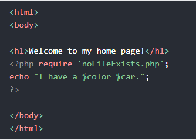

Continuação PHP
PHP Forms
As superglobais PHP $_GET e $_POST são usadas para coletar dados de formulário.
Quando o usuário preenche um formulário e clica em enviar, os dados do formulário são enviados para um processamento de um arquivo PHP. Podendo ser escolhido o method.
Para exibir os dados enviados, você precisa simplesmente ecoar todas as variáveis. O "welcome.php" tem a seguinte aparência:
GET vs POST
Ambos criam uma matriz (por exemplo, matriz (chave1 => valor1, chave2 => valor2, chave3 => valor3, ...)). Esta matriz contém pares de chaves / valor, onde as chaves são os nomes dos controladores do formulário e os valores são os dados de entrada do usuário.
GET
Os dados são visíveis na URL, tendo também limite da quantidade de informações a serem enviadas, limitação de 2.000 caracteres.
Sendo usado para enviar dados não confidenciais.
POST
As informações enviadas pelo post são invisíveis para outras pessoas e não tem limite de informações a enviar.
Além disso, o POST oferece suporte a funcionalidades avançadas, como suporte para entrada binária de várias partes durante o upload de arquivos para o servidor.
Validação de Formulário
Pense em SEGURANÇA ao processar formulários
Validação de Formulário
Usamos o $_POST para pegar o dado especifico do formulário
Validar dados de Formulário
Para sua segurança, ao criar um formulário lembre-se de colocar as seguintes informções:
- htmlspacialchar() - fará com que mude os caracteres caso alguem tente invadir seu site, trocando a < por & lt
- trim() - Retira caracteres desnecessários (espaços extras, tabulação, nova linha) dos dados entrado pelo usuário
- stripslashes() - Remove as barras invertidas (\) dos dados entrado pelo usuário
Forumlário com Campos Obrigatórios
Para criarmos um formulário obrigatório podemos fazer de dois modos, adcionando required no final do input ou adicionando if e mais uma variável para cada variável indifcando erro, e colocar o empty(), que se o valor for vázio você adiciona nada a ele, caso o contrário ele recebe o dado correspondente do formulário. Feito isso, no formulário você colocará a variável de erro, no final, caso o usuário entre com nada, aparecerá um erro na tela.
Variáveis em PHP:
Usando if no formulário:

Estrutura das perguntas no formulário:

URL / e-mail do formulário
Validar Nome
Para validarmos um nome ou qualquer outra coisa, usamos o preg_match(), pois ele pesquisa uma string para o padrão, retornando verdadeiro se o padrão existir e falso caso o contrário.
No código abaixo mostra uma maneira simples de validarmos um nome contém apenas letras, travessões, apóstrofos e espaços em branco. Caso o valor deste campo não for valido, armazene uma mensagem de erro.
$name = test_input($_POST["name"]);
if(!preg_macth("/^[a-zA-Z-' ]*$/", $name)) {
$nameErr = "Somente letras e espaços em branco.";
}
Validar e-mail
Uma maneira mais fácil e segura de validar se um e-mail está bem formado é usar a função filter_var().
No código abaixo, o e-mail não estiver bem formado, armazene uma mensagem de erro:
$email = test_input($_POST["email"]);
if (!filter_var($email, FILTER_VALIDATE_EMAIL)) {
$emailErr = "Formato de e-mail inválido!";
}
Validar URL
O código a seguir mostra uma maneira de verificar a sintaxe de um endereço URL (esta expressão regular também permite traços no URL). Se a sintaxe do endereço de URL não for valida, digite uma mensagem de erro:
$website = text_input($_POST["website"]);
if (!preg_macth("/\b(?:(?:https?|ftp):\/\/|www\.)[-a-z0-9+&@#\/%?=~_|!:,.;]*[-a-z0-9+&@#\/%=~_|]/i",$website)) {
$websiteErr = "URL inválida!";
}
Validar nome, e-mail e URL
Neste caso iremos juntar todos os passos anteriores e aplicar todos em um código, ficando com esta aparência:
Formulário Completo
Mantenha os valores na forma
Para mostrar os valores em campos de entradas depois que o usuário clica no botão enviar, adicionamos um pequeno script PHP dentro do atributo de valor dos seguintes campos de entrada: nome, email, website. No campo textarea do comentário, colocamos o script entre as tags <textarea> e </textarea>. O pequeno script produz o valor das variáveis $name, $email, $website e $comment.
Em seguida, também precisamos mostral qual botão de opção foi marcado. Para isso, devemos manipular o atributo marcado (não o atributo de valor para os botões de opção):

PHP Advanced
Data e Hora
Usamos a função data() para formatar uma data e / ou hora.
Sintaxe
data(format, timestamp)
Marque um encotro
o parâmetro format é necessário da função date(), onde especifica como formatar a data/hora.
Alguns caracteres que estão comumente usados para data:
- d - Representa o dia do mês (01 - 31)
- m - Representa um mês (01 - 12)
- Y - Representa um ano (em quatro dígitos)
- l ('L' minúsculo) - Representa o dia da semana
Podemos usar alguns caracteres para separa-los, como, "/", "-", ".".
Ano automático de direitos autorias
Use a date() para atulizar automaticamente o ano dos direitos autorais em seu site:
Exemplo:
%copy; 2010- <?php echo date("Y");?>
Ganhe um tempo
Alguns caracteres comumnete usados para hórarios:
- H - formato de 24 horas de um hora (00 a 23)
- h - formato de 12 horas de uma hora com zeros à esquerda (01 a 12)
- i - minutos com zeros à esquerda (00 a 59)
- s - segundos com zeros à esquerda (00 a 59)
- a - ante meridiem minúsculo e Post meridiem (am ou pm)
Exemplo:
<?php echo "As horas são: " . date("h:i:sa");?>
Observe que a função date() retornará a data/hora atual do servidor
Obtenha um fuso horário
Se a hora que você colocou em seu site não estiver correta, provavelmente é porque seu servidor está em outro pais ou configurado para um fuso horário diferente.
Portanto, se você precisa que o horário esteja correto de acordo com um local específico, você pode definir o fuso horário que deseja usar.
O exemplo abaixo define o fuso horário para "America / New_York" e, em seguida, exibe a hora atual no formato especificado:
<?php date_default_timezone_set("America/New_York");
echo "O tempo é: " . date("h: i: sa");
?>
Crie uma data com mktime()
O parâmentro opcional timestamp na função data () especifica um timestamp. Se omitido, a data e hora atuais serão usadas (como nos exemplos acima).
A mktime() retorna o caminho da data / hora Unix para uma data. O carimbo da data / hora Unix contém o número de segundos entre a época do Unix (1 Janeiro de 2020 00:00:00 GMT) e a hora especificada.
Sintaxe
mktime (hour, minute, second, month, day, year)
O exemplo abaixo cria uma data e hora com a data() de vários parâmetros na mktime():
Exemplo:
<?php
$d=mktime(11, 14, 54, 8, 12, 2014);
echo "Data criada " . data("d-m-Y h:i:sa", %d);
?>
Crie uma data a partir de uma string com strtotime()
A strtotime() é usada para converter uma string de data legível por humanos em um carimbo de data/hora Unix (o número de segundos desde 1º de Janeiro de 1970 00:00:00 GMT).
Sintaxe
strtotime(time, now)
Exemplo
<?php
%d=strtotime("10:30pm April 15 2014");
echo "A data criada foi: ". date("d-m-Y h:i:sa", $d);
?>
Arquivos de inclusão
A instrução include( ou require) pega todo o texto / código / marcação existente no arquivo especificado e os copia para o arquivo que usa a instrução include.
Incluir arquivos é muito útil quando você deseja incluir o mesmo PHP, HTML ou texto em várias páginas de um site.
Include e Require
É possível inserir o conteúdo de um arquivo PHP em outro arquivo PHP (antes que o servidor o execute), com a instrução include ou querire.
As instruções include e require são identicas, exceto em caso de falha:
- require - Irá produzir um erro fatal (E_COMPILE_ERROR) e para o script.
- include - Só produzirá um aviso (E_WARRING) e o script continuará.
Portanto, se você quiser que a executação continue e mostre aos usuários a saída, mesmo se o arquivo de inclusão estiver ausente, use a instrução include. Caso contrário, no caso do FrameWork, CMS ou uma codificação de aplicativo PHP complexa, sempre use a instrução require para incluir um arquivo de chave para o fluxo de execucão. Isso ajudará a evitar o comprometimento da segurança e integridade do aplicativo, caso um arquivo de chave esteja acidentalemente perdido.
Incluir arquivos economiza muito trabalho. Isso significa que você pode criar um cabeçalho, rodapé ou arquivo de menu padrão para todas as suas páginas da web. Então, quando o cabeçalho precisar ser atualizado, você só precisa atualizar o arquivo de inclusão do cabeçalho.
Sintaxe
include 'filename';
or
require 'filename';
Include exemplo:
Suponha que temos um arquivo de rodapé padrão chamado "footer.php", que se parece com isto:
<?php
echo "<p>Copyright © 1999-" . date("Y") . "W3Schools.com<p>;"
?>
Usando no HTML:

Exemplo 2:
Suponha que temos um arquivo de menu padrão chamado "menu.php":

Todas as páginas do site devem usar esse arquivo de menu. Veja como isso pode ser feito (estamos usando um elemento <div> para que o menu possa ser facilmente estilizado com CSS posteriormente):

Exemplo 3:
Suponha que você tem um arquivo chamado "vars.php", com algumas variáveis definidas:

Então, se incluirmos o arquivo "vargs.php", as variáveis podem ser usadas no arquivo de chamada:
.png)
O require também é usada para incluir um arquivo de código no PHP.
No entanto, há uma grande diferença entre incluir e exigir; quando um arquivo é incluído com o include e o PHP não consegue encontrá-lo, o script continuará a ser executado:
Se fizermos o mesmo com o require, a instrução echo não será executada porque a execução do script termina depois que a require retorna um erro fatal:
Use o require quando o arquivo for exibido pelo aplicativo.
Use o include quando o arquivo não for necessário e o aplicativo deve continuar quando o arquivo não for encontrado.
Manipulação de arquivos
PHP tem várias funções para criar, ler, enviar e editar arquivos.
Tenha cuidado ao manipular arquivos
Os erros mais comuns ao manipularmos algum arquivo são,editar o arquivo errado, encher o disco rígido com dados inúteis e exibir o conteúdo de um arquivo acidentamente.
Função readfile()
A readfile() lê um arquivo e o grava no buffer de saída.
Suponha que temos um texto chamado "webdictionary.txt", armazenado no servidor, que se prarece com este:

O código para ler o arquivo e gravá-lo no buffer de saída é o seguinte (a readfile() função retorna o número de bytes lidos em caso de sucesso):

O readfile é útil se tudo o que você deseja fazer é abrir um arquivo e ler o seu conteúdo.
Arquivo Aberto / lido
Para abrirmos um arquivo usamos a função fopen(), esta quando usamos esta função podemos fazer mais coisas que o readfile().
O primeiro parâmetro quando usamos o fopen() contém o nome do arquivo entre aspas, e segundo especifica qual modo será aberto. Caso não conseguimos abrir o arquivo podemos deixar uma mensagem, como no exemplo abaixo:
<?php
$myfile = fopen ("texte.txt", "r") or die ("Não foi possível abrir o arquivo!");
echo fread($myfile, filezie("texte.txt"));
fclose($myfile);
?>
Podemos abrir os arquivos da seguinte forma:
| Modos | Descrição |
|---|---|
| r | Abre o arquivo somente para leitura. O ponteiro do arquivo começa no início do arquivo. |
| w | Abre o arquivo somente para escrita. Apaga o conteúdo do arquivo ou cria um novo arquivo se não existir. O ponteiro do arquivo começa no início do arquivo. |
| a | Abre o arquivo somente para escrita. Os dados existentes no arquivo são preservados. O ponteiro do arquivo começa no final do arquivo. Cria um novo arquivo caso não exista. |
| x | Cria um novo arquivo somente para escrita. Retorna FALSE e um erro caso o arquivo já exista. |
| r+ | Abre um arquivo para leitura / escita. O ponteiro do arquivo começa no início. |
| w+ | Abre um arquivo para leitura / escrita. Apaga o conteúdo do arquivo e cria um novo se ele não existir. O ponteiro do arquivo começa no início. |
| a+ | Abre um arquivo para leitura / escrita. Os dados presentes no arquivo são preservados e cria um arquivo se não existir. O ponteiro do arquivo começa no final. |
| x+ | Cria um novo arquivo para leitura / escrita. Retorna FALSE e um erro caso o arquivo já exista. |
fread() - Arquivo para leitura
A função fread() lê a partir de um arquivo aberto. O primeiro parâmetro contém o nome do arquivo a ser lido e o segundo especifica o número máximo de bytes a serem lidos.
Podemos usar no segundo parâmetro o filesize(), onde ele vai ler até o final do arquivo. Dentro do seu parâmetro você deve colocar o nome do arquivo entre aspas.
fclose() - Fechar arquivos
A função fclose() fecha os arquivos abertos. Para usa-la é bem simples, quando você terminar de modificar o arquivo, você colocará na próxima linhas, fclose() e dentro o nome do arquivo.
É uma boa pratica sempre fechar o arquivo depois de manipulalo, pois deixa-lo aberto pode fazer com que o programa gaste mais memórias atoa.
fgets() - Ler uma linha
A função fgets() é usada para ler uma única linha de um arquivo. Dentro do seu parâmetro você deve colocar o nome do arquivo. Após chamarmos a função, o ponteiro do arquivo foi para a próxima linha.
feof() - End-Of-File
Esta função verifica se o fim do arquivo foi atingido. Sendo útil para percorrer dados de comprimento deseconhecido. A função abaixo lê linha por linha, até que o final do arquivo seja alcançado:
<?php
$myfile = fopen("text.txt", "r") or die ("Não foi possível abrir o arquivo!");
while (!feof($myfile)) {
echo fgets($myfile) . "<br>";
}
fclose($myfile);
?>
fgetc() - Leitura de único caractere
Esta função é parecida com a anterior, podem esta, ela lê somente um caracter do arquivo. Podemos usar esta função no exemplo anterior, no caso ela vai ler um caracter por caracter até o final do arquivo.
Após o seu uso, o ponteiro do arquivo se move para o próximo caracter.
Criação / Escrita de arquivo
fopen() - Abrir um arquivo
Podemos usar a função fopen() para criamos um arquivo. Caso você tente abrir um arquivo que não existe, ele irá ser criado por causa da função, desde que o arquivo seja aberto para gravação (w) ou anexação (a).
OBS: Caso você tente criar um arquivo e dê erros, verifique se você concedeu ao seu arquivo PHP acesso ao gravar informações no disco rígido.
fwrite() - Escrever no arquivo
Esta função é usada para escrever no arquivo. No seu primeiro parâmetro deve conter o nome do arquivo, e o segundo a string a ser gravada.
Sobrescrita
Se usarmos a mesma função com o mesmo arquivo e inserirmos algumas informações, os dados anteriores serão apagados e os novos ficarão lá.
Upload de Arquivos
Configure o arquivo "php.ini"
Primeiro, devemos certificar que o PHP está configurado para permitir uploads de arquivos. No seu arquivo "php.ini", procure a file_uploads e defina-a como Ativado / On.
Crie um formulário
Em seguida, crie um formulário que permita que o usuário envie arquivo de imagem que desejam enviar:

Algumas regras a serem seguidas para o formulário acima:
- Certifique-se que o formulário usa o metodo "post".
- O formulário também precisa do seguinte atributo: enctype = "multipart / form-data". Ele especifica qual tipo de conteúdo usar ao enviar o formulário.
Sem os requisitos acima, o upload do arquivo não funionará.
Outras coisas a ser observadas:
- O atributo type = "file" da tag <input> mostra o campo de entrada como um controle de seleção de arquivo, com um botão "Browser" próximo ao controle de entrada.
O formulário acima envia os dados para um arquivo chamado "upload.php". Iremos mostrar a seguir.
Criando um script para upload de arquivos
O arquivo mencionado anterior, "upload.php" contém o seguinte código:

Explicação das linhas do código:
- $target_dir = "uploads/" - especifica o diretório onde o arquivo será colocado
- $target_file - especifica o caminho do arquivo a ser carregado
- $uploadOk = 1 - ainda não é usado
- $imageFileType contém a extensão do arquivo do arquivo (em letras minúsculas)
- Em seguida, verifica se o arquivo de imagem é uma imagem real ou uma imagem falsa
Nota: Você precisará criar um novo diretório chamado "uploads" no diretório onde o arquivo "uploads.php" reside. Os arquivos carregados serão salvos lá.
Verifique se o arquivo já existe
Primeiro, vamos verificar se o arquivo já existe na pasta "uploads". Em caso afirmativo, uma mensagem de erro é exibida e $uploadOk é definido como 0:
//Checando se a pasta existe
if (file_exists($target_file)) {
echo "Desculpe, arquivo inexistente.";
$uploadOk = 0;
}
Limitando o tamanho do arquivo
O campo de arquivo denominado em nosso formulário HTML acima é denominado "fileToUpload".
Agora, queremos verifica o tamanho do arquivo. Se o arquivo tiver mais de 500 KB, uma mensagem de erro será exibida e $upload será definido como 0:
//Checando o tamanho do arquivo
if ($_FILE["fileToUpload"]["size"] > 500000) {
echoo "Desculpe, seu arquivo é muito grande.";
$uploadOk = 0;
}
Uplaod completo do arquivo
Agoora para termos um arquivo completo para nosso upload, precisamos juntar todos os códigos. Isso deixará-lo completo.
Cookies
O que é um Cookies
Usado pra identicar um usuário. É um pequeno arquivo que o servidor incorpora no computador do usuário. Cada vez que o mesmo computador solicitar uma página com um navegador, ele também enviará o cookie. Com o PHP, você pode criar e recuperar valores de cookies.
Criar Cookies
Para criamos usamos a função setcookie().
Sintaxe:
setcookie(name, value, expire, path, domain, secure, httponly);
OBS: Apensa o parâmetro de nomes é obrigatório, o resto é opcional.
Cria / recuperar um cookie
O exemplo a seguir cria um cookie denomidado "usuario" com o valor "Lucas Alexsander". O cookie ira expirar após 30 dias (86400 * 30). O "/" significa que o cookie está disponível em todo o site (caso contrário, selecione o diretório de sua preferência).
Em seguida, recuperamos o valor do cookie "usuario" (usando a variável global $_COOKIE). Também usamos a isset() para descobrir se o cookie está definido:

O setcookie() deve aparecer antes da tag <html>.
Nota: O valor do cookie é automaticamente codificado por URL ao enviar o cookie e automaticamente decodificado quando recebido (para evitar a codificação de URL, use em seu lugar setrawcookie()).
Modificando um Cookie
Para modifica-lo, basta alterar os dados inseridos dentro da função setcookie().
Excluir um Cookie
Para excluir, basta alterar a data da função setcookie() para uma data no passado.
Verifique se os Cookies estão habilitados
Para verificarmos, iremos usar o count() para verificar se existe mais de um dado dentro do cookie ele está habilitado, caso contrário, desabilitado.
Sessões
Uma sessão é uma forma de armazenar informções (em variáveis) a serem usadas em varias páginas.
Ao contrário de um cookie, as informações não são armazenadas no computador do usuário.
O que é uma Sessão?
Ao trabalhar em um aplicativo, você o abre, faz alterações e logo em seguida o fecha. Isso é muito parecido com uma sessão. Mas temos um problema, quando fazemos isso em um computador, ele sabe quem você é, mas quando fazemos isso na web, ela não te reconhece, porque endereço HTTP não mantém o estado.
As variáveis de sessão resolvem este problema, pois elas armazenam informações do usuário para serem usadas em várias páginas (por exemplo, nome de usuário, cor favorita etc...). Por padrão, as variáveis de sessão duram até que o usuário feche o navegador.
Então, as variáveis de sessão contêm informações de um único usuário e estão disponíveis para todas as páginas em um aplicativo.
Iniciar um Sessão
Uma sessão é iniciada usando session_start(). Variáveis de sessão são definidas com a variável global: $_SESSION.
Vamos criar uma página chamada "demo_session1.php". Nesta página, iniciaremos uma nova sessão e definimos algumas variáveis de sessão:

OBS: A varável de sessão deve ficar antes do início da tag HTML.
Obter valores de variáveis de sessão
A seguir, criaremos outra página chamada "demo_session2". A partir desta página, acessaremos as informações da sessão que definimos na primeira página ("demo_session1").
Observer que as variáveis de sessão não são passadas individualemente para cada nova página, em vez disso, são recuperadas da sessão que abrimos no início de cada página (sesscion_start()).
Observe que todos os valores das variáveis são armazenadas na variável global: $_SESSION:
.png)
Outra maneira de passarmos essas informações é usando a variável global dentro do print_r(). Exemplo:
.png)
Como funciona? Como ele sabe que sou eu?
A maioria das sessões define uma chave de usuário no computador que se parece com isso: 765487cf34ert8dede5a562e4f3a7e12. Em seguida, quando uma sessão é aberta em outra página, ela verifica o computador em busca de uma chave de usuário. Se houve correspondência, ela acessa aquela sessão, caso contrário, ele inícia uma nova sessão.
Modificar uma variável de uma Sessão
Para alterar a variável de uma sessão basta substitui-la na nova página usando a variável global $_SESSION.
Destrua uma sessão
Para removermos todas as variáveis de uma sessão e destruir, use session_unset() e session_destroy():
- session_unset() - Remove todas as variáveis da sessão
- session_destroy() - Destroi a a sessão
Filtros
Validating data = Determina se os dados estão na forma adaqueda
Sanitilizing data = Remove qualquer caractere ilegal dos dados
A extensão do filtro
Filtros são usados para validar e higienizar a entrada externa.
A extensão do filtro tem muitas das funções necessárias para verificar a entrada do usuário e é projetada para tornar a validação de dados mais fácil e rápida.
A função filter_list() pode ser usada para listar o que a extensão do filtro oferece:

Por que usar filtros?
Muitos aplicativos da web recebem entradas externas. A entrada / dados externos podem ser:
- Entrada do usuário a partir de um formulário
- Cookies
- Dados de serviços da web
- Variáveis de servidor
- Resultados da consulta de banco de dados
Você deve sempre validar os dados externos!
Dados inválidados enviados podem levar a problemas de segurança e quebrar sua página web. Ao usar filtros, você pode ter certeza que seu aplicativo receberá a entrada correta!
filter_var()
A função filter_var() valida e limpa os dados. Filtrando uma única variável com um filtro especifico. São necessários dois dados:
- A variável que você deseja verificar
- O tipo de cheque a usar
Sanitize a String
A função filter_var() pode ser usada para remover todas as tags HTML de uma string.